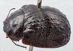
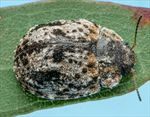
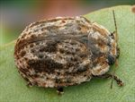
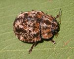
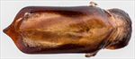
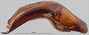
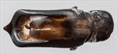
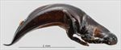

Click on images to enlarge
{kind=link}

Male, Tenterfield, N.E. New South Wales
{kind=link}

Female, Spicer's Gap, S.E. Queensland
{kind=link}

Female, Mt. Lofty, Victoria
{kind=link}

Male, Laura, North Queensland
{kind=link}

Aedeagus, dorsal view (Alligator Gorge, Mt Remarkable N.P., South Australia)
{kind=link}

Aedeagus, lateral view (Alligator Gorge, Mt Remarkable N.P., South Australia)
{kind=link}

Aedeagus, dorsal view (Amamoor, S.E. Queensland)
{kind=link}

Aedeagus, lateral view (Amamoor, S.E. Queensland)
Name
Trachymela sp. Ta83
Reference specimen
2000-245, Boonoo Boonoo, NE New South Wales.
Adult Description
Length: ♂ 7.1–9.1 mm (n=20), ♀ (6.3)7.0–9.6 mm (n=35).
Colouration:
- Head: Black or very dark brown; if very dark brown, then often with black clypeus, labrum yellowish-brown, mandibles dark brown with black tips; antennomeres 1–3 light or mid-brown, 4–11 much darker, often black.
- Pronotum: Very dark brown or black, concolorous with head; if dark brown, then usually with three black maculae present on disc: a longitudinally extended one on midline and one on each side of midline, rarely joined; a small round black macula present also on each side behind eye.
- Scutellum: Black.
- Elytra: Dark brown or black, concolorous with or sometimes a slightly lighter shade than pronotum; if not black, then with many small black areas that coincide with pustules and, rarely, raised interstices; a transversely aligned concentration of these often situated behind antero-median depression, and a large black raised area situated just outside centre of edge of disc; punctures concolorous with interstices; humeral callus black.
- Venter & Legs: Venter black; inner surface of elytral epipleura black.
- Cuticular Wax: Moderate to thick patches of greyish cuticular wax interspersed with brown, generally without apparent pattern of distribution, but 3 longitudinal bands of brown cuticular wax are always present on pronotum: one in centre and one behind each eye. Some areas are wax-free or almost so, including the scutellum, a band bordering the elytra from scutellum to summit, an elongated patch on each elytron a little behind summit and a short distance away from it, and a larger, oval patch with its anterior end lining up with previous patch but closer to margin of disc and extending posteriorly from there. Waxy coating can be very thick in some patches and some may be in the form of small filaments and threads.
Morphology:
- Shape: Body slightly flattened and relatively narrow, greatest height viewed laterally is just in front of middle of elytral margin.
- Head: Quite coarsely (pd ≈ 2–3× ef) and somewhat unevenly punctured. Antennae short (AL/BL: ♂ 37–43%, ♀ 30–35%), filiform.
- Pronotum: Almost evenly curved transversely; foveal depression absent or poorly developed with a clearly defined and almost round elevated area in middle; discal area uneven with raised regions on each side behind inner edge of eyes; puncturation on disc variable, usually clearly impressed, puncture size variable, noticeably larger anteriorly where it is usually fractionally smaller than on head, unevenly and not very densely distributed with interspersed much finer punctures, becoming much coarser from level of inner edge of eye to lateral margins; interstices somewhat rugulose, rarely smooth, in discal area. Thick front margins join thinner lateral margins in a smoothly rounded right-angle, with lateral margin curving smoothly and gradually towards rear margin, becoming noticeably thicker in posterior half.
- Scutellum: Smooth and unpunctured.
- Elytra: Surface evenly curved transversely, almost straight or even slightly concave longitudinally from scutellum to summit, then curvature becomes convex from summit to apex; area adjacent to elytral summit smooth and very slightly elevated; a very shallow depression extends across surface just in front of middle; punctures very large and distinct and relatively evenly distributed between verrucae; verrucae mostly discrete, circular or oval, not or very loosely aligned in longitudinal series, prominently elevated, some with fine punctures in centre; verrucae just posterior to antero-median depression sometimes partially joined by transverse ridges; posterior third of marginal area prominently concave; surface continuous or very slightly discontinuous under humeral callus. Vertical extension of epipleura small (HCE/PW = 0.30–0.33).
- Venter: Prosternal process broad, strongly expanded anteriorly or (rarely) parallel-sided, open or closed anteriorly; setae scattered over prosternal process and mesoventrite; a single seta on anterior and median trochanter; front edge of metaventrite beveled, truncate; inner edge of posterior of epipleurae lacking setae.
Male Genitalia (Aedeagus):
- Dimensions: Relatively short (LPE/BL = 25–29%).
- Dorsal view: Shaft almost parallel-sided or very slightly concave over most of its length, widening very slightly towards widest point about 15% of length from apex, then curving rapidly inwards before converging towards apex in a straight line so that spatula is roughly triangular; dorsal surface lightly sclerotized with dorso-median channel very faint, dorsolateral channels long and well-defined; tip protruding, prominent and almost triangular; ostium large, the dorsal ostial processes extend to its apical edge when extended.
- Lateral view: Shaft moderately curved from base for a short distance, curvature reducing, thinning towards apex over 20% of length; tip strongly deflexed; flagellum thin and lightly curved at exit.
Immature Stages
Unknown.
Similar species
- Ta145: There is little that distinguishes this species from Ta83, except for the longer aedeagus.
- Ta57: Similar with its mottled, multi-coloured coating of cuticular wax. However, it is smaller, its elytra appear much smoother, with verrucae less elevated, its antennae are shorter, and its scutellum is usually punctured. The prosternal process of Ta57 is usually narrowest at its anterior extreme, though this is somewhat variable, and a few specimens show an expansion, though never as extreme as is typically seen in Ta83. The epipleura of Ta57 are considerably further extended below the humeral callus than in Ta83.
Notes
- Taxonomy: One of the most characteristic features of Ta83 is the multi-hued cuticular wax (the "mottled" pattern) that covers its dorsal surface, with a dark patch near the middle of each elytron, just above the level of the humeral callus. This pattern that is maintained by specimens over the whole of its wide geographic range. The broadly expanded anterior of the prosternal process is also diagnostic.
- Distribution & Abundance: Ta83 is a widely distributed species in much of eastern Australia. The size distribution of males and females largely overlaps.
- Host Associations: Recorded from a range of Eucalyptus hosts, almost all in subgenus Symphyomyrtus. These include hosts in series Adnataria, viz. E. crebra (n=16), E. polyanthemos (n=3), E. populnea (n=2), E. siderophloia (n=1), E. moluccana (n=1), E. viridis (n=1), and unidentified ironbark (n=3) and box (n=2); and series Maidenaria, viz. E. bridgesiana (n=4) and E. nova-anglica (n=1). A single record each from the monocalypts E. radiata and E. pauciflora are likely incidental.
- Morphological Variation: There is considerable variation in many characters, not least in the considerable range of sizes encompassed, but more material is required to determine whether this indicates the presence of more than one species. Four specimens from Conondale Range (S.E. Queensland) are smaller than is typical for this species. The single male [2004-019], though small, is probably within the likely range of variation of the species; its aedeagus is essentially identical in shape to that of the reference specimen and its LPE/BL ratio is within the normal range. The specimen also exhibits the dramatic widening of the prosternal process at its anterior extreme that is typical of Ta83. However, the 3 females are exceptionally small – all are below 7 mm in length and thus smaller than any of the males of this species known, which is unusual for a Trachymela. In addition, these specimens have a prosternal process that is not at all widened at its anterior extreme. It is only because these specimens were obtained on the same occasion that they have been included in Ta83, but it is possible that these are Ta145 or another species entirely. Individuals of the small species Ta82 are sometimes found together with Ta83 but are much less tuberculate than any of these specimens. A specimen from Tanduringie, Queensland is the only other specimen below 7 mm in length; however, it was bred from a 4th instar larva collected in the field, which frequently results in small individuals.
Copyright © 2026. All rights reserved.